Turn every conversation into finished work.
Bring a transcript, notes or any source material. Concludo returns the summary, the decision log, the action items with owners and the action plan, ready for you to review, change and send. Nothing leaves until a person approves it.
No bot joins your call. Concludo does not record, join or transcribe meetings, so there is nothing new in the room and nothing to install.
Dana, Northwind Foods: we cannot move on the pallet spec until procurement signs off.
You: I will send the revised spec and the costings.
Dana: if it lands by Friday we can approve at Tuesday's board.
Action items
Decision log
Decision memory, searchable
What you leave the meeting with
Each one is extracted from the transcript and carries the line it came from, so you can check it rather than trust it. Everything here is rule-based today: no language model is called anywhere in the product.
Meeting summary
What was discussed and what it means, in the length you asked for.
Action items
Each with an owner and a date, taken from the words people actually used.
Action tracker
Every open action in one list, with its owner, its date and whether it has moved.
Decision log
What was decided, by whom, and on what condition. The record that settles arguments.
Action plan
The sequence, the owners and the dependencies, ready to hand to the team.
Decision memory
Searchable across every meeting, so what was decided in March is findable in August.
Follow-up email, client deck and action timeline
Shown below as design previews, for Pro and above. They are not built yet, and nothing is sent until a person approves it.
You approve it
Nothing is sent, assigned or filed until a named person says so.
One meeting happened. This came out of it.
Everything else Concludo does hangs off this. A conversation takes place, somebody pastes the transcript in, and the documents that conversation was supposed to produce are already written when they open the project.
Scope v3 and delivery plan review
- Client
- Harborview Developments (fictional)
- When
- Monday 16 November 2026, 2:00 to 2:45 pm AEDT
- Who
- Three people, two organisations
- Captured on
- A video call, exported as a transcript
- Added to Concludo
- Pasted in as a transcript, with the meeting details
Alex Mercer: the aim today is to settle scope v3, agree the fee for phases one and two, and lock the start date.
Priya Kaur: let's call it. We go ahead with scope v3, without landscaping.
Tom Nguyen: agreed from finance.
- Meeting output document
- Three decisions
- Five actions, owned
- Follow-up email
- Client deck
- Action timeline
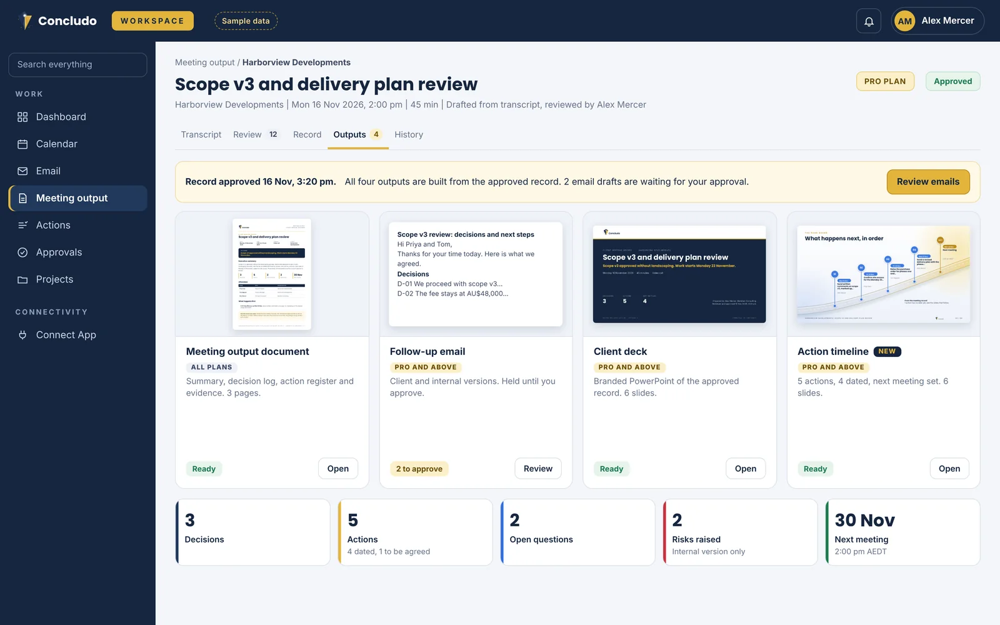
Nothing is final until you say so. Concludo drafts the record and every item waits for you to confirm it, one at a time. An action with no date is shown as a gap, not given one, and a remark marked private in the meeting is left out of every output. The email, deck and timeline are only built after the record is approved.
Add the meeting, check every item, approve the record
Each meeting moves through the same tabs: Transcript, Review, Record, Outputs and History. Actions then stay on the record until they close.
Paste it, upload it or type it. Concludo does not join or record meetings.
Paste a transcript or notes, or upload a text, Word or caption file. Add the meeting, project, date and audience, and Concludo shows what it will draft before you start. Everyone in the meeting must have been told it was being transcribed, and remarks flagged as private are left out of every output.
- Works with transcripts exported from any recorder app, smart pen or meeting platform
- Concludo drafts the record for your review. Nothing is shared or sent until you approve it
- The meeting output document is on every plan. The email, deck and timeline are Pro and above
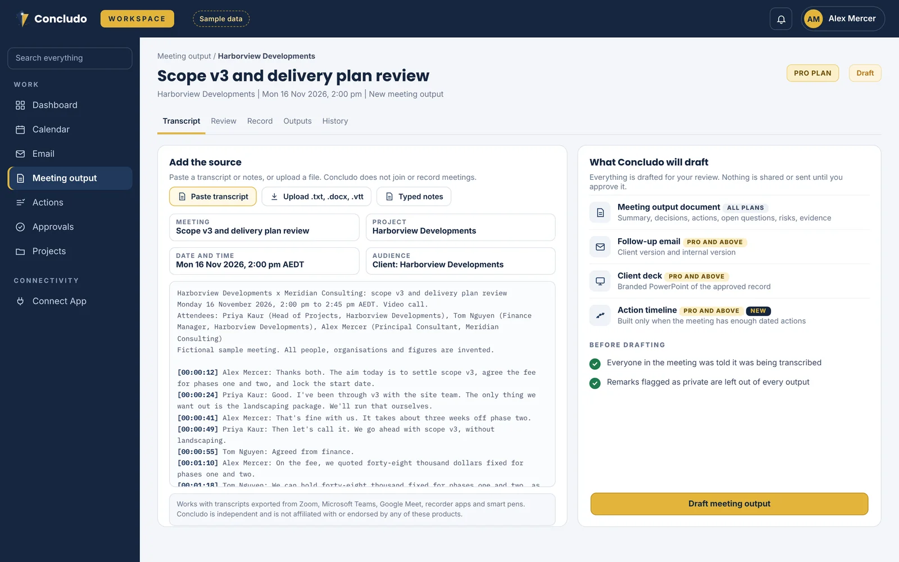
Eleven of twelve confirmed. The twelfth has no date, so it says so.
Every decision, action, question and risk is listed with the person and the moment in the transcript it came from. You confirm each one, edit it, or leave it as a gap. Where someone said "later this week", Concludo will not guess a date.
- The source lines sit beside every item, so you can check rather than trust
- Items you leave undated are carried as "Date to be agreed"
- Private remarks are shown struck through and excluded from the record, both emails, the deck and the timeline
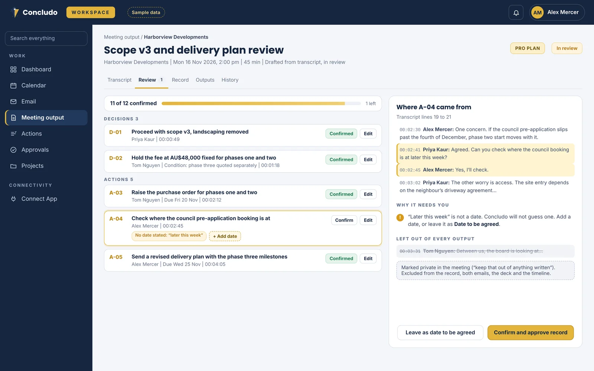
Every action from every meeting, counted once
One screen shows where the work stands. Each action sits in exactly one bucket: completed, overdue, due today or pending, so the ring always adds up. In progress, waiting and blocked are filters on top, not extra slices that double count.
- Eight count tiles that double as filters
- Owner, priority, status and due date on every row, with the meeting it came from
- Switch between your own actions and everything you are permitted to see
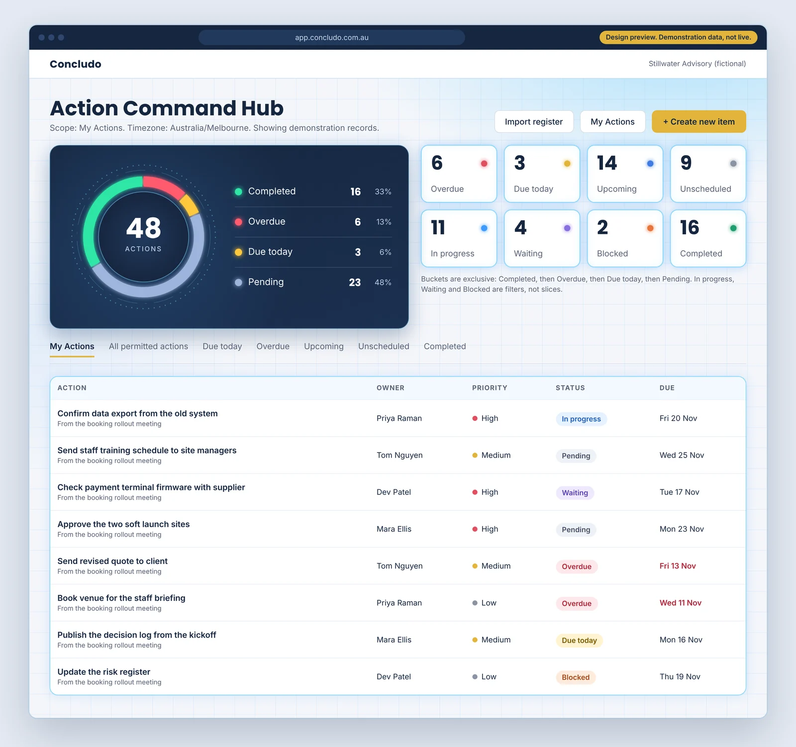
About these screens. They are design previews of Workspace pages in build. Every name, date and figure belongs to a fictional organisation. They show the intended shape of the product, not anyone's results.
Where the work actually gets done
The screens below are Concludo Workspace views running sample data for a fictional organisation, and each is labelled. The CRM and Workspace home captures are earlier and are still to be refreshed. No customer information, mailbox or accounting system is connected in any of them.
The inbox, sorted by what it is asking of you
One prioritised view of the replies owed, the deadlines stated in a thread, the actions waiting on you and the quick wins. Work and personal accounts stay separate and are never combined. A message that looks unsafe is held out of every other list for a security review, with the reasoning in plain words.
- Overview, needs attention, reply queue, actions and deadlines, waiting, quick wins, clear backlog, all email and outputs, with work and personal kept apart
- Each score shows its reasons, and the inbox panel is read only
- A reply draft in a concise, formal or friendly tone, with the figures to check against the source. Send stays off until every check is ticked
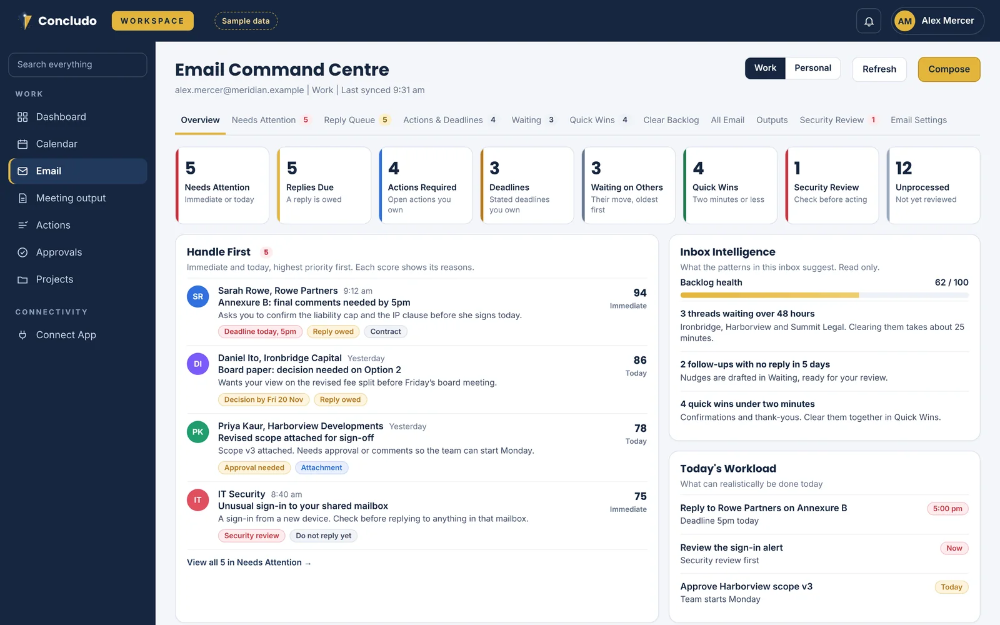
A customer record that fills itself from the conversation
Open work, what was won, which accounts need attention and every promise still outstanding on both sides. Leads, pipeline, commitments, organisations and account plans, updated from what was actually said rather than from what somebody remembered to type.
- Every figure says how much of it is recorded, so a thin number cannot pass as a full one
- Proposed updates queue for confirmation instead of writing themselves in
- The KAM Copilot names what nobody has answered about an account yet
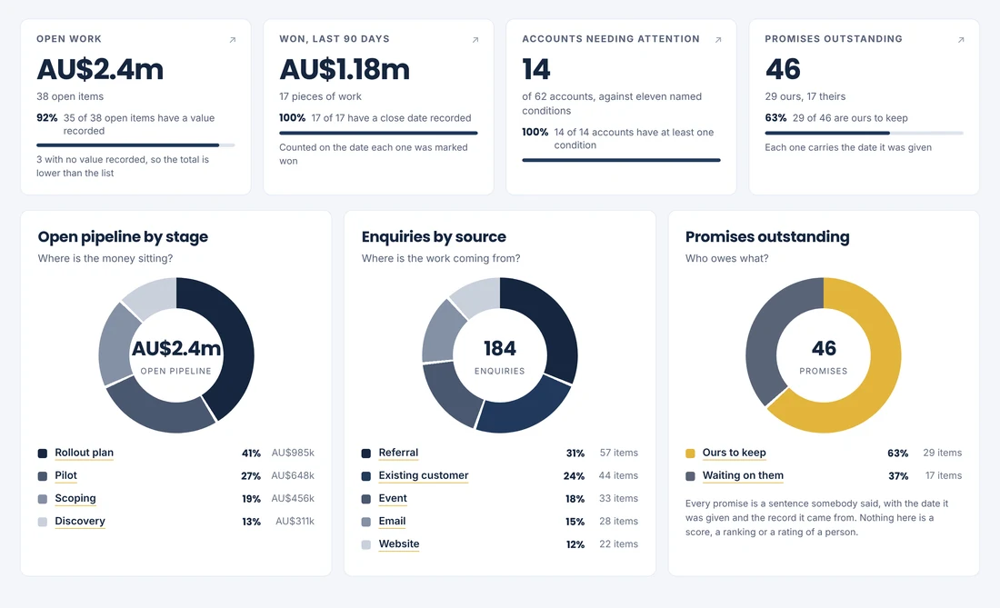
The day, with the commitments in it
Day, work week, month and agenda views, with an Action Board beside them. Generate to Calendar turns a finished meeting record into proposed tasks, events, a timeline, follow-ups and review dates. Nothing is written to the calendar until you review it, and you can undo for 60 seconds.
- Each item links back to the meeting record or email it came from
- A conflict between Concludo and your own calendar is shown side by side, and you choose which to keep
- An ICS feed and ICS or CSV export, with the defaults set once in calendar settings
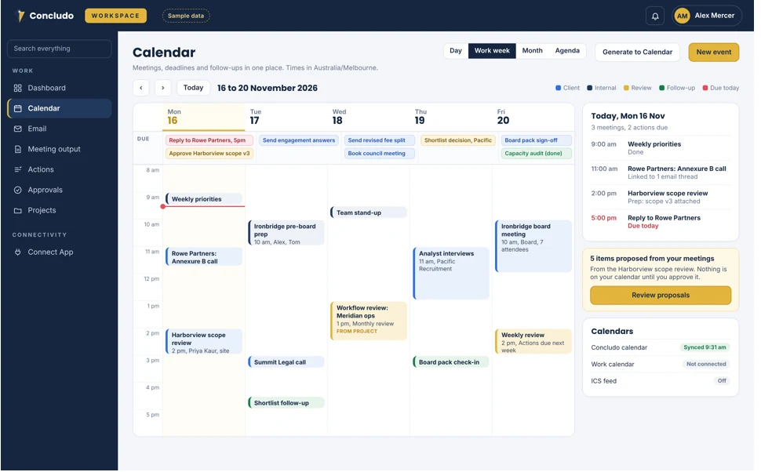
Thirteen agents that do the work around the meeting
Each one watches something specific, prepares what it finds, and then stops. Ten propose and you decide. Three only report. None of them sends anything, and none scores, ranks or rates a person.
- Approval first, every time. Anything that would leave Concludo waits in the Approval Centre for a person
- Only what the record says: every item links to the meeting or line it came from
- One switch in Governance pauses any agent, or all of them
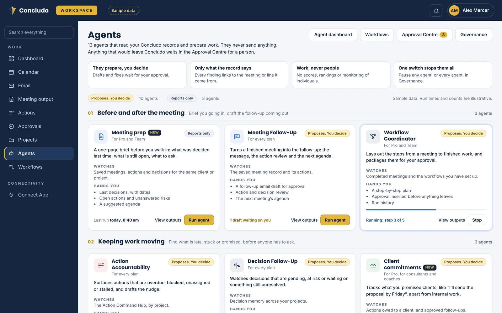
Say what should happen. See it laid out before it runs.
Describe the routine in plain English and Concludo lays out the steps, or build it yourself by dragging steps onto a canvas. Every workflow shows its checks, can be test run without sending anything, and carries an approval step before anything leaves.
- Checks such as "approval sits before the send step" and "runs only on meetings with a consent basis" are shown on the workflow itself
- Run history, an Approval Centre and a Governance Centre sit beside the builder
- Where a connected app stops answering, a Fix it panel says what to do
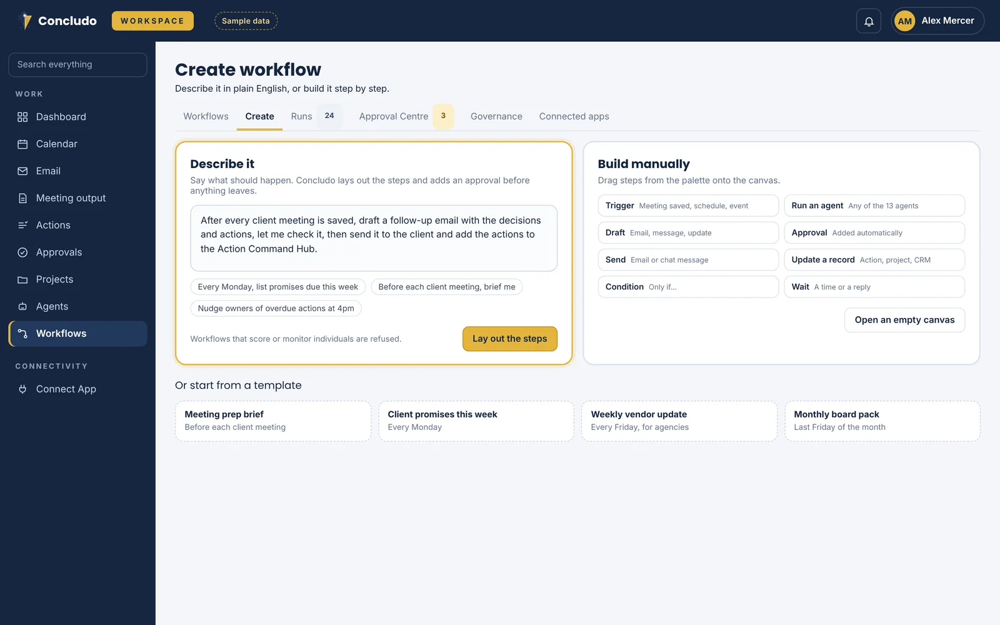
Describe it in a sentence
"When a proposal has been out for five working days with no reply, draft the follow-up, attach the original, and hold it for me to approve." That sentence is the whole build. You end up understanding the automation because you wrote the brief for it, not because you sat through a course on nodes and triggers.
Or lay it out yourself
The same workflow on a canvas, step by step, where you pick the trigger, the conditions, the agent and the approval gate by hand. Use it when you already know exactly what you want, or to open up something the builder wrote and see how it was put together.
Six more places the second write-up disappears
Transcript archive
Every transcript you have pasted, searchable, attached to its project and to the outputs made from it. Retention and deletion stay under your control, and the record shows what was read and by what.
Connect your apps
Sign in through each provider's own page and approve exactly what Concludo may do. Mail, calendar, files, tasks, accounting and CRM tools connect this way. Concludo never sees your password.
Approvals centre
One queue holding every pending reply, invitation, record change and briefing release. The only door between a draft and the outside world, with a person standing in it.
Projects and lineage
Every output stays attached to the transcript it came from, and every transcript stays attached to the project, so the trail from conversation to commitment can be walked backwards a year later.
Decision memory
Ask what was decided about a project, who approved it and what happened next. The answer comes back with the records attached, not as a confident paragraph with nothing underneath.
Insight and reporting
Open commitments, and where work is sitting longer than it usually does. Measured on the work, never on a person, and never as a score beside anybody's name.
Built so nobody has to take its word for anything
Most of the risk in AI at work is not that the model gets something wrong. It is that nobody can tell when it has. Three rules hold everywhere in Concludo, and they are enforced in the software rather than described in a policy.
Concludo proposes. A person disposes.
No agent sends a message, assigns work or changes a record on its own. Every external action waits for a named person, including the routine ones.
Measure the work, never the people
Concludo does not calculate, store or display an individual score, ranking or productivity index. The database schema refuses the column, so it cannot be added by accident.
Every claim points at a record
Each output names what it was drawn from, what it assumed, and what it could not find. An answer with nothing behind it says so instead of filling the gap.
Narrow on purpose
Any business that runs meetings can use Concludo. It is built first for the people whose written work is the thing they sell.
The write-up is the deliverable
A management consultancy runs a two-hour discovery workshop with a food manufacturer. The transcript becomes the findings summary, the decision log, the action plan with owners and the client-ready deck, drafted before the walk back to the car park is over.
Continuity between sessions
An executive coach finishes a session with an engineering firm's operations lead. What was committed to last month, what moved and what did not, is on the record before the next session rather than in somebody's notebook.
One standard across the office
An accounting practice or an IT services provider agrees how a client conversation is captured, what gets sent within a day, and who approves it. Everyone works the same way, and the record shows that they did.
Software fixes the follow-up. It does not fix the meeting.
Concludo also teaches the part no software can do for you: deciding whether the meeting should exist, costing it, writing the agenda as questions, cutting the attendee list, and running the twenty four hour follow-up. That is the Meeting Mastery Workbook, and it works whether or not you ever open the Workspace.
10 chapters
Each with a worked example, a worksheet and a template you can use the same week.
15 templates
Print ready. The decision log, the agenda as questions, the delegation standard.
232 pages
A manual you work in, not a book about meetings you read once.
5 free tools
Starting with the one that turns a vague complaint into a number: what the meeting costs.
Priced so one person can start
- Twenty processed transcripts a month
- Meeting output document, summary, decision log, action plan and action tracker
- Three projects and search
- One connected account, export and delete your data
- Everything in the Starter subscription
- One hundred processed transcripts a month, unlimited projects
- Follow-up email, client deck and action timeline. Decision memory across clients, and the calendar
- Three connected accounts, and an audit of your own actions
- Everything in the Pro subscription, shared
- Shared workspaces, roles, comments and assignments
- Shared decision memory, team dashboards and approvals
- Admin console, seat management, audit log and retention rules
All prices are indicative and in Australian dollars, and are tested with real buyers before anything is published as final. Concludo Pty Ltd is not registered for GST, so no GST is charged today. Nothing on this page can be bought yet: the Workspace is in build and is not open for sale. The Meeting Mastery Workbook is a separate product from AU$19.
The things people ask first
Does Concludo record or join my meetings?
Which recorders and platforms does it work with?
What happens to a transcript after I paste it in?
Will it send things on my behalf?
Can I buy it today?
Is a language model writing this?
What is not built yet?
Where is Concludo based?
Start with the tools that are already live
Five free tools, no account and no card. The Workspace is in build, and you can put your name down to see it first.
Everything that happens after somebody stops talking
One place that takes a transcript and produces the work, holds the customer record, sorts the inbox, runs the routines, and makes a person approve anything that leaves the building.
Transcript, review, record, outputs, history
Every meeting follows the same five tabs, so the result looks the same whoever ran the meeting.
Transcript
Paste, upload or type the source and add the meeting details.
Review
Confirm each decision, action, question and risk against its source line.
Record
The approved record as a document, with PDF and Word download.
Outputs
Follow-up email, client deck and action timeline, built from the approved record.
History
Who confirmed, edited and approved what, and when.
Add the source
Paste a transcript or notes, or upload a text, Word or caption file. Concludo does not join or record meetings. Add the meeting, project, date and audience, and the panel on the right shows exactly what will be drafted.
- Meeting output document on every plan
- Follow-up email, client deck and action timeline on Pro and above
- Everyone in the meeting must have been told it was being transcribed, and private remarks are left out
Confirm one item at a time
Decisions, actions, open questions and risks appear as a list. Each has Confirm and Edit, and the panel beside it shows the transcript lines it came from. An action without a date is flagged, and Concludo will not guess one.
- Progress is shown as items confirmed out of items found
- Add a date, or leave the action as "Date to be agreed"
- Confirm and approve the record when every item is settled
The approved record, as a document
The record becomes a three page document with the summary, decision log, action register and evidence. Each item links to its transcript line, a private remark is withheld, and no date is printed that was not said in the meeting.
- Download as PDF or Word, or save to the project
- The version, approver, approval time and audience are on the record
- The record is what every other output is built from
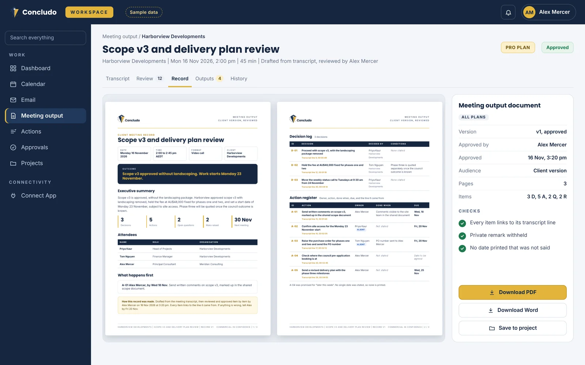
Four outputs from one approved record
The meeting output document, a follow-up email, a client deck and an action timeline, all built from the approved record only. Two email drafts wait for approval, and nothing is shared or sent until you approve it.
- The follow-up email, client deck and action timeline are Pro and above
- The action timeline is built only when the meeting has enough dated actions
- Counts of decisions, actions, open questions, risks and the next meeting sit underneath
The email and the deck, checked before they go anywhere
The follow-up email comes in a client version and an internal version. The client deck is a branded six slide presentation, drafted from the same approved record.
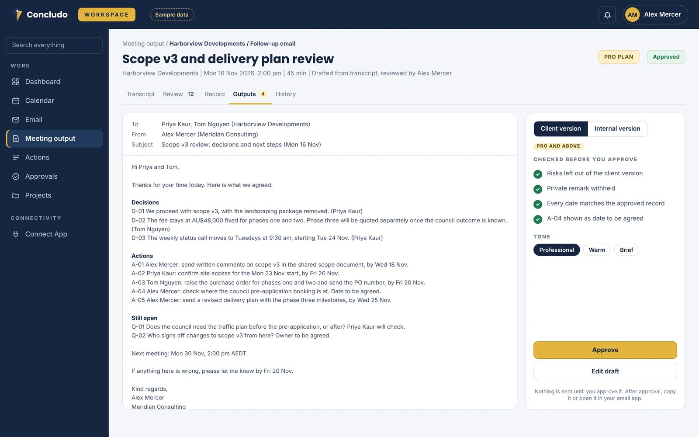
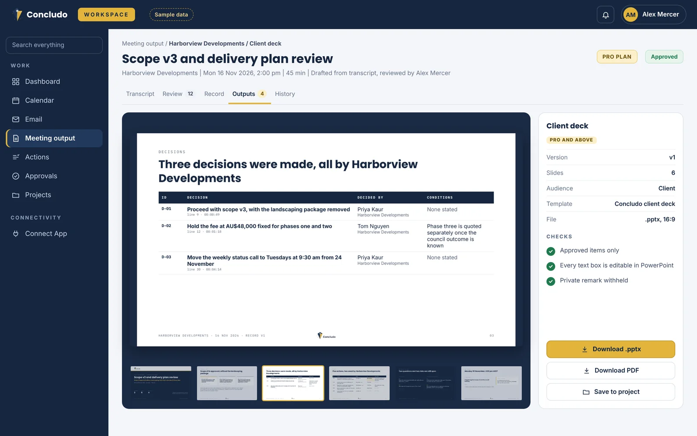
- Checks before approving: risks left out of the client version, private remark withheld, every date matching the record
- Tone choices of professional, warm or brief, and an Edit draft button
- Nothing is sent until you approve. After approval, copy it or open it in your email app
- The deck can be downloaded as PowerPoint or PDF, and every text box stays editable
An action timeline, and a clear line between plans
The action timeline lays every dated action out on one road, by date and owner, as a six slide PowerPoint. On the Starter subscription the meeting output document is included, and the other three outputs show as included in Pro.
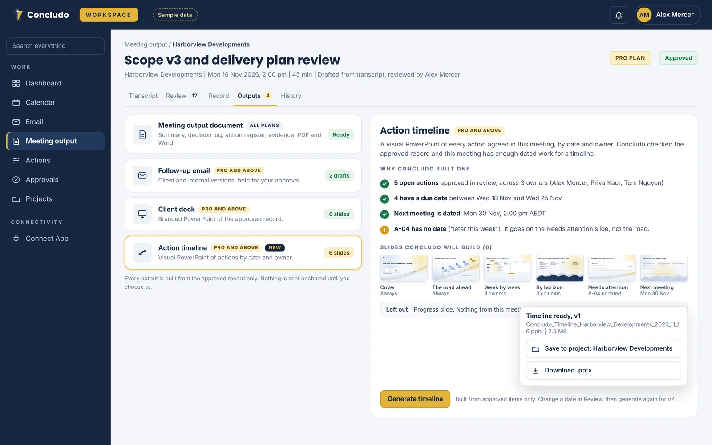
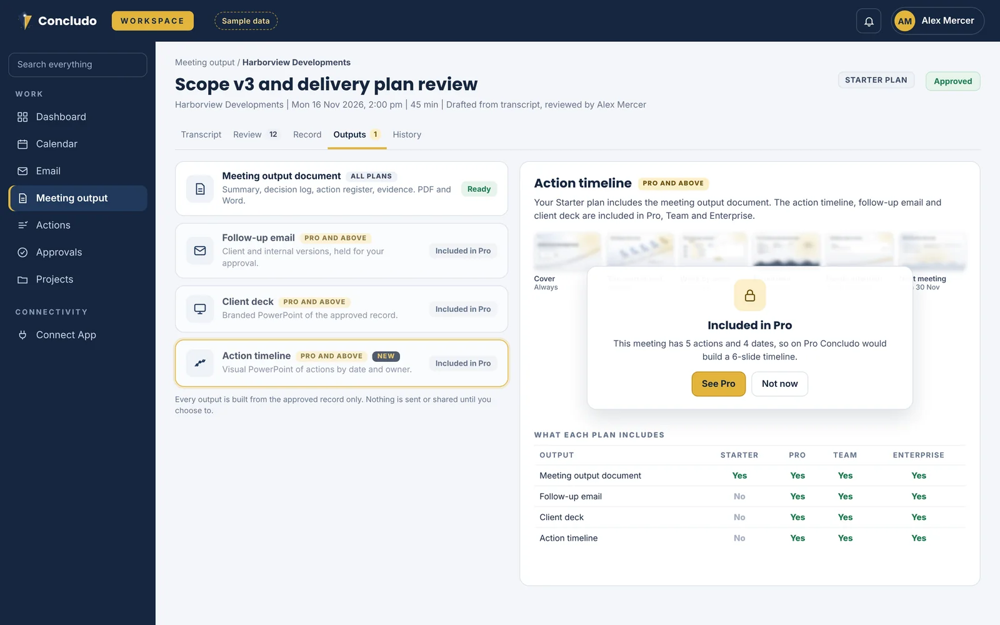
Every action from every meeting, counted once
Approved actions land here with an owner, a priority, a status and a due date. Each action sits in exactly one bucket: completed, overdue, due today or pending. In progress, waiting and blocked are filters on top, so the ring always adds up.
- Eight count tiles that double as filters
- Every row names the meeting it came from
- Add an item by hand or import an existing register
Design previews. The meeting output screens and the Action Command Hub show Workspace pages in build. The data is for a fictional organisation, and nothing here is a record of anyone's results.
Start from a paste, not a blank page
Create a project, paste the transcript, and the outputs are drafted against it. Ask the Copilot what was decided, what is overdue and who owns it, and the answer arrives with the records attached. Where the records do not answer, it says so rather than inventing a paragraph.
- Transcript archive and saved projects
- Decision memory across sessions, not only within one
- Outputs exported as documents, slides or structured data
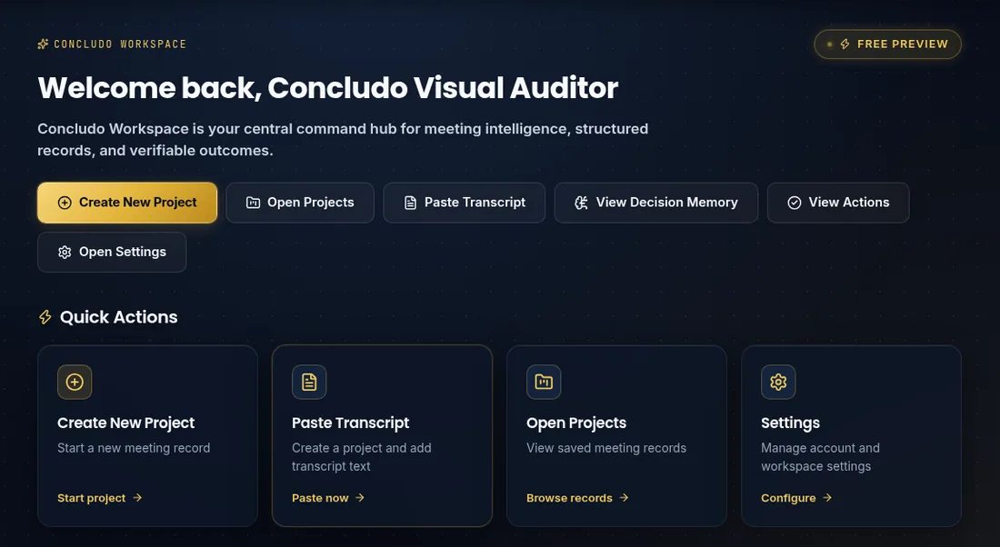
The inbox, sorted by what it is asking of you
One prioritised view of the replies owed, the deadlines stated in a thread, the actions waiting on you and the quick wins. Work and personal accounts stay separate and are never combined. A message that looks unsafe is held out of every other list for a security review, with the reasoning in plain words.
- Overview, needs attention, reply queue, actions and deadlines, waiting, quick wins, clear backlog, all email and outputs, with work and personal kept apart
- Each score shows its reasons, and the inbox panel is read only
- A reply draft in a concise, formal or friendly tone, with the figures to check against the source. Send stays off until every check is ticked
The account record, kept honest
Pipeline, leads, commitments, organisations, people and account plans. The KAM Copilot reads one account through six lenses and separates what is recorded from what it inferred from what nobody has answered, then gives you the question that would close each gap.
- Proposed record changes queue for confirmation
- The buying centre is shown as roles that are filled or empty, never as a judgement about a person
- Promises on both sides, with the date each one was given
Thirteen agents, one door
Agents prepare; the Approval Centre is where a person decides. Outgoing replies, external invitations, record changes and document releases all pass through the same queue, and the audit record keeps what was read, what was produced and who cleared it.
The day, with the commitments in it
Day, work week, month and agenda views, with an Action Board beside them. Generate to Calendar turns a finished meeting record into proposed tasks, events, a timeline, follow-ups and review dates. Nothing is written to the calendar until you review it, and you can undo for 60 seconds.
- Each item links back to the meeting record or email it came from
- A conflict between Concludo and your own calendar is shown side by side, and you choose which to keep
- An ICS feed and ICS or CSV export, with the defaults set once in calendar settings
Your tools, connected through their own sign-in
You sign in with the provider, approve exactly what Concludo may do, and Concludo checks the connection before it shows as connected. Concludo never sees your password.
Mail and calendar
Send the approved follow-up, and put the agreed dates in the diary.
Files and notes
File the summary and the deck where the rest of the engagement already lives.
Tasks and projects
Push action items with their owners and dates into the tracker your team uses.
CRM, accounting, social
Update the customer record, raise what needs raising, schedule what was agreed.
Independence. Concludo is an independent product. It is not affiliated with, endorsed by, or partnered with any device maker, meeting platform or note-taking service. It works with transcripts from any AI pen, phone recording or meeting platform. Connections are added progressively and each one shows its own status in the app.
Describe the routine once. It runs the same way every time.
Meeting follow-up
Transcript lands, the outputs are extracted, the actions queue for approval and then go to the tracker with their dates.
Weekly digest
What was decided, what is overdue and what is waiting on somebody else, assembled every Friday.
Board briefing
Decisions, risks and actions since the last meeting, in the format the board already reads.
An approval step
Any workflow reaching outside Concludo has one, and it cannot be configured away.
What works today, and what does not
Everything on this site describes software that exists. This is the part most product pages leave out, so it is written down here instead.
Transcript to summary, action plan and decision log. Projects, decision memory, the action tracker, search and insight statistics. Team workspaces, roles, approvals, the audit log, retention and legal hold. Provider sign-in for mail and calendar. All of it rule-based: no language model is called anywhere.
The Email Command Centre and the Copilot, rule-based, with sending held behind approval. Workflows: storage is real, most execution is simulated. PDF reports produce real files. The free trial and the billing screens exist but are not yet enforced server side.
Branded PowerPoint export, the client deck, the action timeline and follow-up email drafting are designed and shown as previews, but are not built yet. Single sign-on, usage limits and seat enforcement are not built either. The Enterprise plan. The CRM and the Communication Hub run on demonstration data only. Privacy, terms and refund pages are in legal review.
The rule this site follows. Say what the Workspace does today. Do not call anything AI-powered until a language model is live, tested and covered by the contract terms. Name a recorder or a platform only with the independence disclaimer. Every product screen on this site is sample data for a fictional organisation, and a screen that shows a design still in build says so.
See it before it opens
The Workspace is in build and is not open for sale. The five free tools are live now and need no account at all.
One meeting in. Finished work out.
Paste a transcript. Check every item against what was actually said. Approve the record. Concludo then drafts the document, the follow-up email, the client deck and the action timeline from that one approved record.
Every screen on this page is a design preview with sample data for fictional organisations. The meeting output pages are in build. They are not open for sale.
Five steps, and the person stays in charge of every one
Nothing moves to the next step until you have checked it.
Add the source
Paste, upload or type. Concludo does not join or record meetings.
Review
Confirm each decision, action, question and risk against its source line.
Record
The approved record, as a document you can download.
Outputs
Email, deck and timeline, built only from the approved record.
History
Who confirmed, edited and approved what, and when.
Say what the meeting was, then paste what was said
Add the meeting, project, date and audience, and the panel beside it shows exactly what will be drafted before you start. Everyone in the meeting must have been told it was being transcribed, and a remark flagged as private is left out of every output.
- Paste a transcript, upload a text, Word or caption file, or type notes
- Works with transcripts exported from any recorder app, smart pen or meeting platform
- The meeting output document is on every plan. The other three outputs are Pro and above
Check every item against the words that were said
Decisions, actions, open questions and risks are listed with the transcript lines behind them. You confirm each, edit it, or leave it as a gap. If someone said "later this week", Concludo will not turn that into a date.
- Progress shows as items confirmed out of items found
- Undated actions are carried as "Date to be agreed"
- Private remarks are struck through and excluded from everything
The approved record, as a document
The record becomes a document with the summary, decision log, action register and evidence. Each item links back to its transcript line, and no date is printed that was not said in the meeting.
- Download as PDF or Word, or save to the project
- Version, approver, approval time and audience are on the record
- Every other output is built from this record and nothing else
The whole meeting, in one file
This is the intended shape of a full meeting record pack: a board briefing, an executive summary, an action plan, a decision pack, an action timeline and a client presentation, each with the evidence behind it.
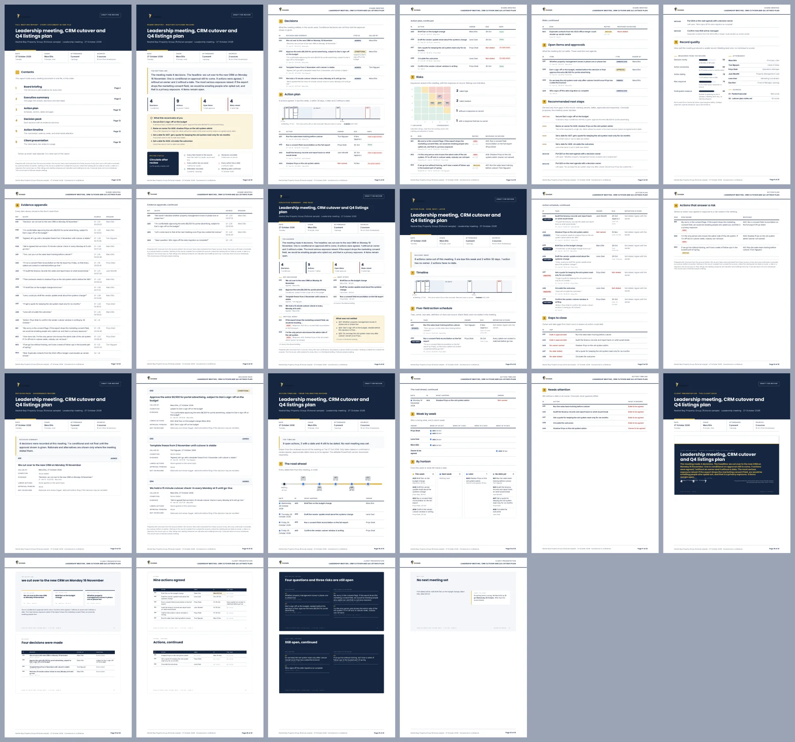
- Every decision and action carries its source line, so a reader can check it
- Gaps are shown as gaps: no owner named, no date stated, date to be agreed
- A record quality panel measures the record, not the people in the meeting. No individual is scored or ranked
Four outputs from one approved record
The meeting output document is on every plan. The follow-up email, client deck and action timeline are drafted for Pro and above, and nothing is shared or sent until a person approves it.
A client version and an internal version, side by side
One email goes to the client and one stays with your team. The client version leaves internal risks out. The internal version includes them and says it is not for the client.
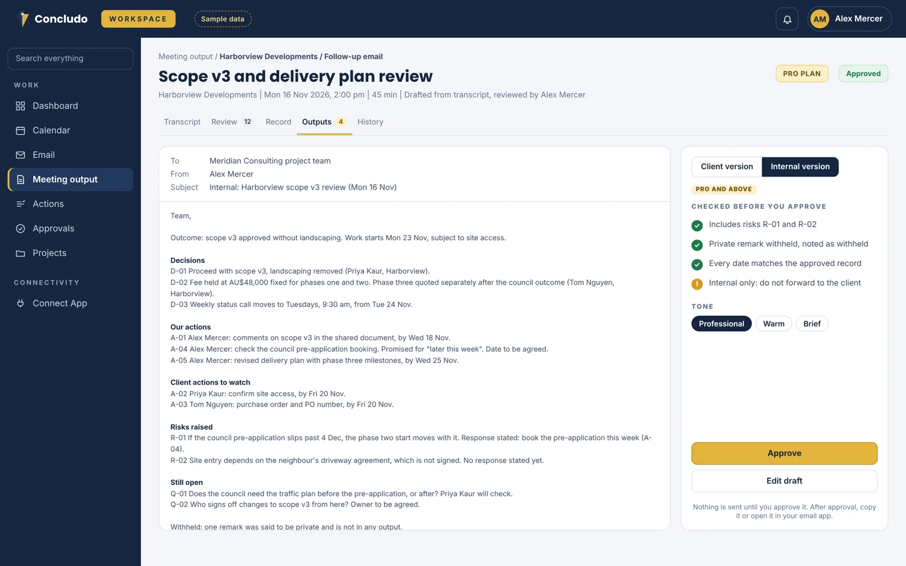
- Checked before you approve: the right risks included or left out, the private remark withheld, every date matching the approved record
- Tone choices of professional, warm or brief, and an Edit draft button
- After you approve, copy it or open it in your own email app. Concludo does not send it for you
Decisions, owners and dates in a table the reader can act on
The drafted body carries the context, each decision with who made it, a table of actions with owner and due date, the deadlines, the open questions and the next meeting. A date that was approximate in the meeting is labelled approximate, and a missing one reads "Date to be agreed".
- Every action has an ID, so replies can refer to A07 rather than describe it
- Open questions are listed with who will check them, or "Owner to be agreed"
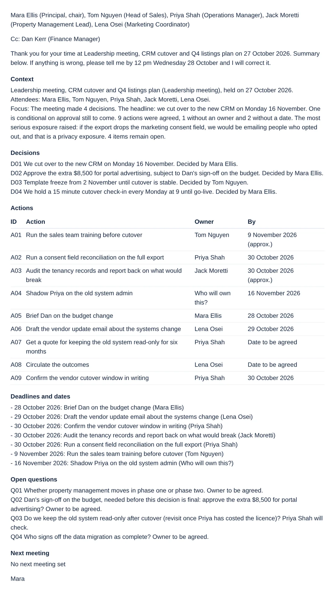
The meeting, ready to present and ready to track
The client deck is a branded presentation of the approved record. The action timeline puts every dated action on one road, by owner and by week, and says plainly which ones are overdue or still have no date.
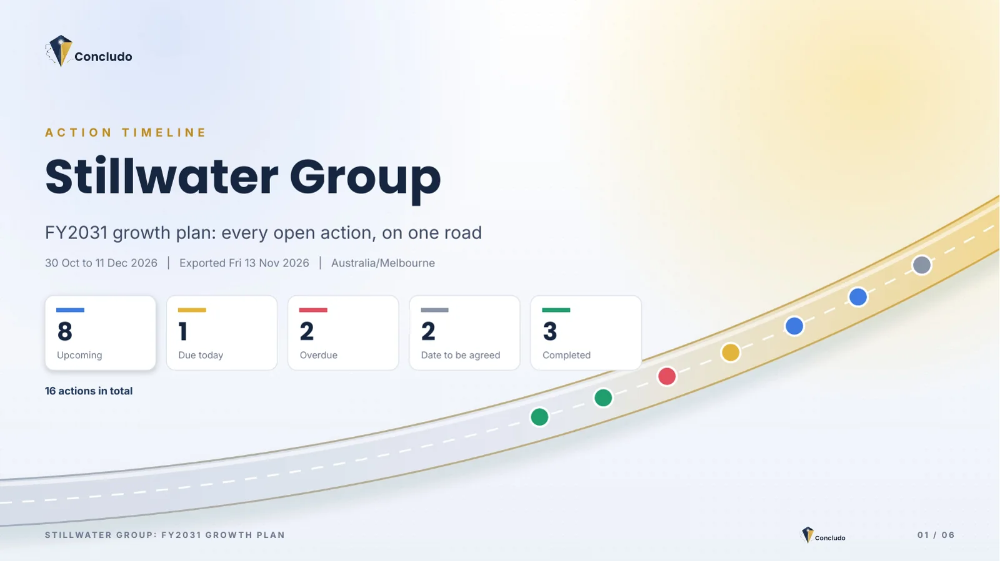
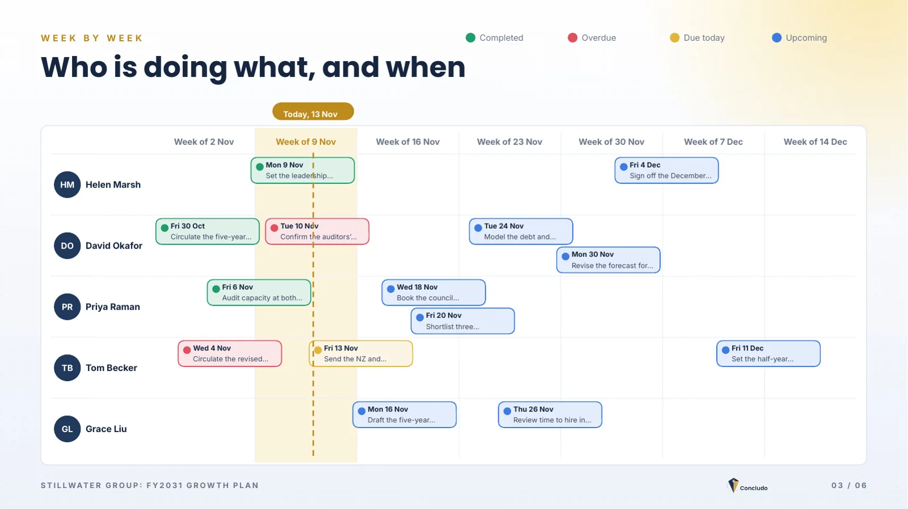
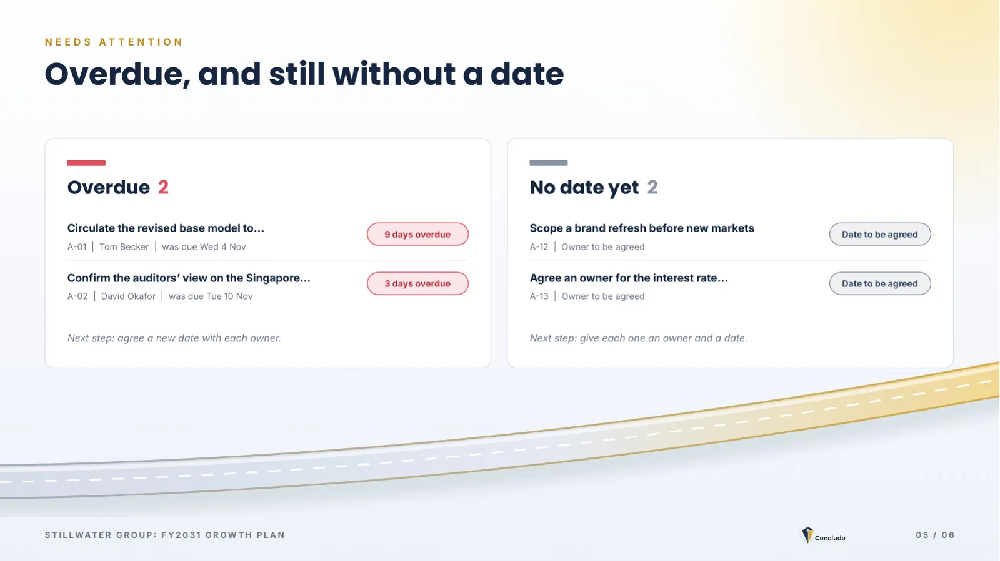
- Six slides: cover, the road ahead, week by week, by horizon, needs attention and next steps
- Built only when the meeting has enough dated actions
- Downloads as an editable PowerPoint, so you can adjust it before it goes anywhere
What each plan includes
On the Starter subscription the meeting output document is included, and the other three outputs show as included in the Pro plan. The plan view makes the difference visible before anyone upgrades.
- Meeting output document: every plan
- Follow-up email, client deck and action timeline: Pro and above
- Plans and prices are indicative until validated with buyers
What it will not do
Guess a date or an owner
If it was not said, it shows as a gap for you to fill.
Send anything
Nothing is shared or sent until a person approves it.
Use a private remark
Anything flagged as private is withheld from every output and the record says it was withheld.
Score or rank a person
The record is measured, never the people in it.
Join or record your meeting
You bring the transcript from the tool you already use.
Where this stands. The Workspace is built and partly working. It is not open for sale, and drafting is rule-based today, with no language model called yet. The follow-up email, client deck, action timeline and full record pack are designed and shown as previews. They are not built yet. The sample meetings belong to fictional organisations, and nothing here is a record of anyone's results. All prices are indicative.
Thirteen agents that do the work around the meeting
Each one watches something specific, drafts what it finds, and then stops. Nothing is sent, assigned or changed until a person approves it.
Concludo proposes. A person disposes.
Approval first
No agent sends a message, assigns work or changes a record on its own. Every external action waits for a named person.
Work, not people
Agents report on actions, decisions, deadlines and risks. They do not score, rank or rate anyone, and the schema will not hold such a figure.
On the record
What an agent read, what it produced and who approved it is written to the audit log and kept.
What an agent is allowed to do
Proposes. You decide.
They draft work and hold it. The draft exists, nobody else has seen it, and it goes nowhere until you approve that exact text.
Reports only
They read and write a report for you. They change nothing, send nothing and assign nothing, ever. There is no path in the code by which they could.
Each one has a single job
A narrow brief is what makes an agent's output checkable. Each one says in its own words what it watches and what it hands you, so you can tell before you run it whether it is the one you want.
Before and after the meeting
3 agentsBrief you going in, draft the follow-up coming out.Meeting prep New
Reports onlyA one-page brief before you walk in: what was decided last time, what is still open, what to ask.
Saved meetings, actions and decisions for the same client or project.
- Last decisions, with dates
- Open actions and unanswered risks
- A suggested agenda
Meeting Follow-Up
Proposes. You decideTurns a finished meeting into the follow-up: the message, the action review and the next agenda.
The saved meeting record and its actions.
- A follow-up email draft for approval
- Action review
- The next meeting's agenda
Workflow Coordinator
Proposes. You decideLays out the steps from a meeting to finished work, and packages them for your approval.
Completed meetings and the workflows you have set up.
- A step-by-step plan
- Approval inserted before anything leaves
- Run history
Keeping work moving
3 agentsFind what is late, stuck or promised, before anyone has to ask.Action Accountability
Proposes. You decideSurfaces actions that are overdue, blocked, unassigned or stalled, and drafts the nudge.
The Action Command Hub, by project.
- Overdue and stalled actions
- Actions with no owner
- Escalation drafts for approval
Decision Follow-Up
Proposes. You decideWatches decisions that are pending, at risk or waiting on something still unresolved.
Decision memory across your projects.
- Decisions pending past their date
- Decisions with no follow-up action
- A follow-up question to send
Client commitments New
Proposes. You decideTracks what you promised clients, like "I'll send the proposal by Friday", apart from internal work.
Actions owed to a client, and approved follow-ups.
- Promises due this week, by client
- Promises past due, with their meeting
- A "where things stand" draft
Seeing risk early
2 agentsPatterns across meetings that a single meeting cannot show.Risk Monitoring
Reports onlyFlags missed deadlines, repeated delays, recurring risks and scope drift.
Meeting history, actions and risks over time.
- Recurring risks with no response
- Repeated delays on the same work
- Where work is queuing
Project Intelligence
Reports onlyReads across a project's meetings for repeated themes, openings and bottlenecks.
Every saved meeting in a project.
- Themes that keep coming up
- Opportunities raised more than once
- Delivery risks by project
Reports and packs
3 agentsFinished documents, drafted from the records you already have.Report Generation
Proposes. You decideProduces executive briefings, project health reports and decision audits, on demand or on a schedule.
Projects, actions and decisions for the period you choose.
- Executive briefing
- Project health report
- Decision audit
Board pack New
Proposes. You decideBuilds the period's board pack as a branded deck outline from decisions, actions and risks.
Records for the reporting period.
- Deck outline, slide by slide
- Decisions and open risks for the board
- A draft to review before export
Vendor campaign update New
Proposes. You decideDrafts the weekly vendor update for a property campaign from campaign meetings and actions.
Campaign meetings and actions tagged to a listing.
- Weekly update draft, per listing
- What was done and what is next
- Sent only after approval
Keeping records clean and safe
2 agentsThe quiet work that makes every other agent more accurate.Consent check New
Proposes. You decideMakes sure every recording or transcript has a consent basis before any workflow runs on it.
Saved meetings and their consent records.
- Meetings with no consent basis
- A hold on runs until it is recorded
- One-click record, confirmed by you
Record hygiene New
Proposes. You decideFinds the gaps that weaken everything else: actions with no owner or date, duplicates, risks with no response.
The Action Command Hub, decisions and risks.
- Actions missing an owner or date
- Likely duplicates to merge or keep
- Fixes you confirm, one at a time
Plan labels follow the Workspace design and are indicative until pricing is validated. Third-party apps a workflow can use are named only in Workflows, and Concludo is independent and is not affiliated with or endorsed by any of them.
Thirteen agents, five groups, one switch
Agents read your Concludo records and prepare work. Anything that would leave Concludo waits in the Approval Centre for a person, and a single switch in Governance pauses any agent or all of them.
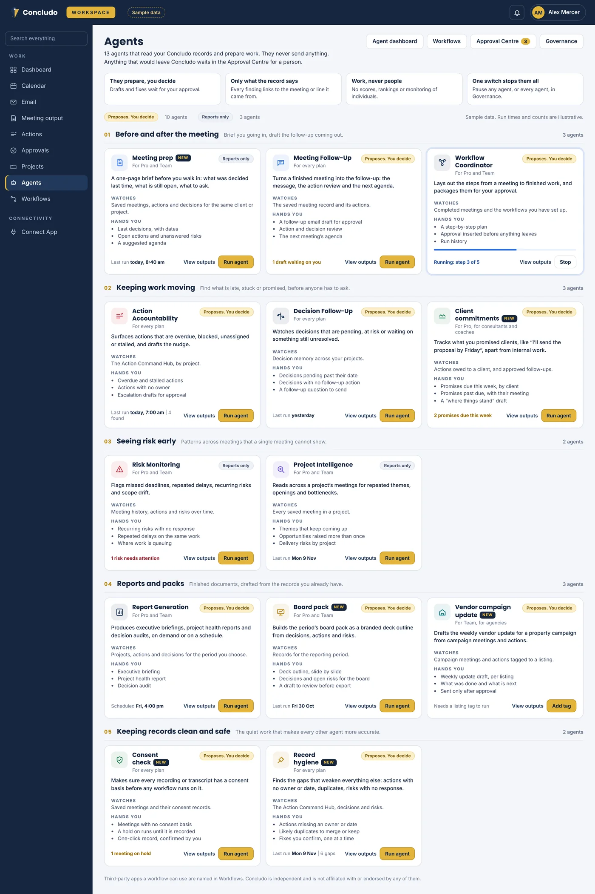
Act without a name against it
Send a message, assign work to a person, change a decision, delete a record, or reach another system, without an approval recorded against a named person.
The whole run, including the ones you refused
Every run records what the agent read, what it produced, how long it took, and who approved or declined it. Declined work is kept too.
One queue, one door
The Approvals Centre holds anything waiting on you. The agent dashboard shows what has run. Neither can be configured away.
See them working on your own transcript
Say what should happen. It gets built.
Automation usually fails at the first step, which is learning the tool. Concludo takes that step out. Describe the outcome in a sentence and the workflow comes back drawn, labelled and written out in plain English, with an approval gate you cannot remove.
Write it, or draw it
Both produce the same thing. One of them does not require you to learn anything first.
Describe it, and see it laid out
Say what should happen, for example "after every client meeting is saved, draft a follow-up email with the decisions and actions, let me check it, then send it to the client and add the actions to the Action Command Hub". Concludo lays out the steps and adds an approval before anything is sent.
- Workflows that score or monitor individuals are refused
- Start from a template, or ask for a change in a sentence
- Checks sit on the workflow itself: approval before the send step, a consent basis, a connected and answering work email
Or build it by hand, and test it first
Drag steps onto the canvas, or press the plus on a wire to add one. The approval step protects the send step and cannot be removed while it does. A test run previews every step and sends and queues nothing.
- Diagram and step views of the same workflow
- Test run shows which steps would run, wait for approval or not send
- Save a working one as a template your team can start from
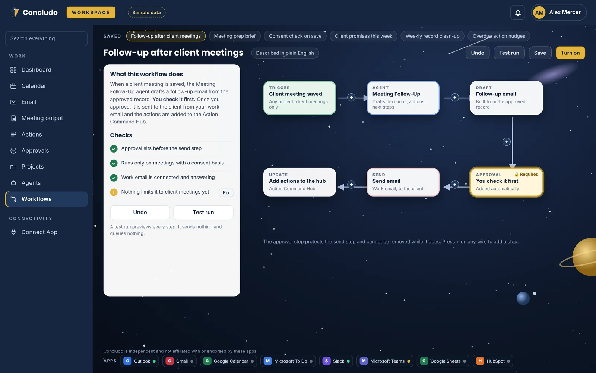
Eight workflows to start from
Each one arrives as a draft, wired to the connections you have approved. Read it, change anything in words, and it still will not run until you say so.
Follow-up after client meetings
When a client meeting is saved, Meeting Follow-Up drafts an email from the approved record. You check it first, and once you approve it goes to the client and the actions go to the Action Command Hub.
Meeting prep brief
Thirty minutes before each client meeting, a one-page brief of what was decided last time and what is still open.
Consent check on save
When any meeting is saved, checks there is a consent basis and holds the run if there is none.
Client promises this week
Every Monday at 9:00 am, what you promised clients and which promises are due, as a draft update.
Weekly record clean-up
Every Monday, the actions with no owner or date and likely duplicates, with fixes for you to confirm.
Overdue action nudges
Every weekday at 4:00 pm, the overdue and stalled actions, with a drafted nudge held for approval.
Monthly board pack
On the last Friday of the month, a board pack deck outline from decisions, actions and risks, saved to the project after approval.
Weekly vendor update
Every Friday at 3:00 pm, a vendor update per listing, held for approval. Needs a listing tag before it can run.
Templates are starting points, not finished routines. Each one opens as a draft with its connections unlinked until you approve them, and every step is editable in words. A workflow you have tuned can be saved as a permanent template so the rest of your team starts from the version that works rather than from a blank page.
Follow-up after client meetings, from trigger to the Hub
One routine, written once. The last step adds the approved actions to the Action Command Hub, and the approval step stays in the middle where it cannot be removed.
Client meeting saved
Any project, client meetings only.
Meeting Follow-Up
Drafts decisions, actions and next steps.
Follow-up email
Built from the approved record.
You check it first
Required, and added automatically.
Email to the client
Sent from your connected work email once approved.
Add actions to the Hub
Tracked with owner, status and due date until they close.
Preview every step before it can send anything
A test run lists each step and whether it would run, wait for you, or not send. It uses a sample meeting and sends and queues nothing.
- The approval step is shown as "would stop here and wait for you"
- The send step is shown as "would send after approval, not sent in a test run"
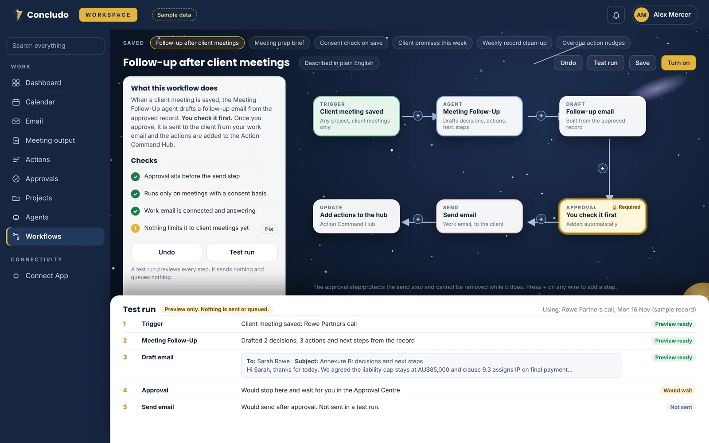
Watch it run, and approve it in one place
Runs shows every run step by step, with filters for waiting, held, failed and completed. A run held for a missing consent basis says so and does not open an incident. Drafts wait in the Approval Centre, where you can edit, reject with a reason, or approve and continue, and the note is kept in the audit log.
- A held run explains what to record before it can retry
- Every approval or rejection is kept on the audit record
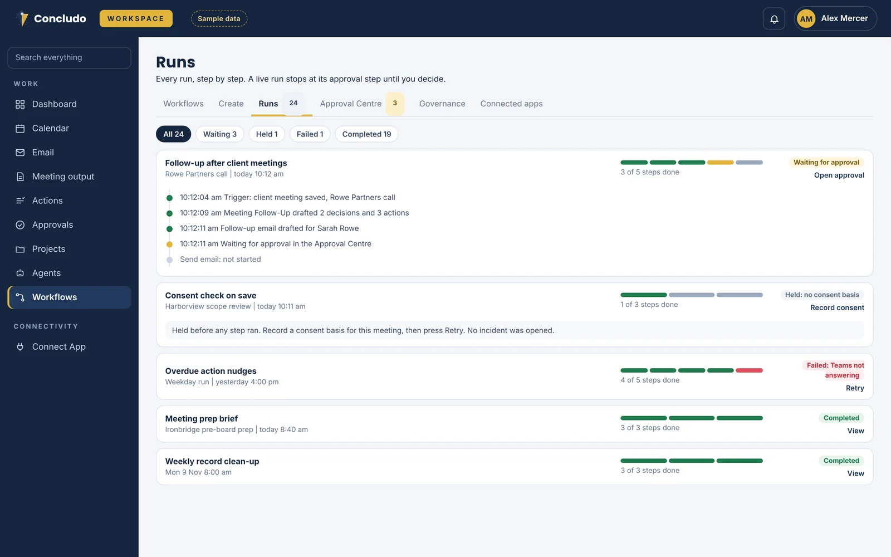
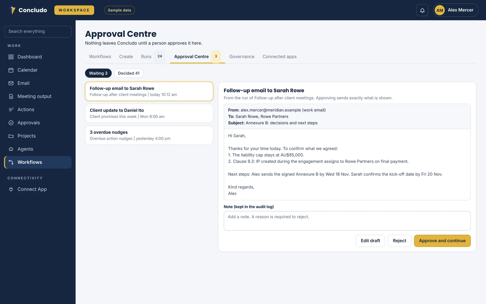
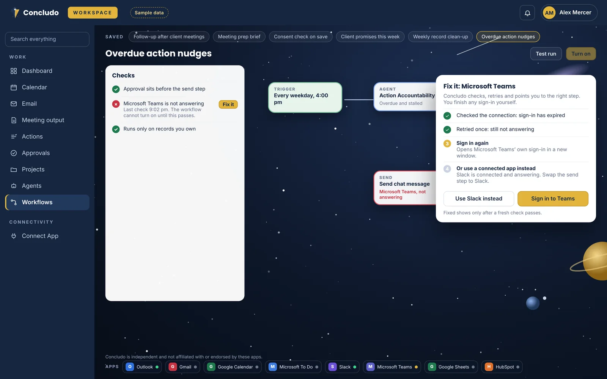
One page to control every workflow and agent
The Governance Centre counts runs, completions, approvals waiting, failures and open incidents, lists every workflow with an on and off switch, and keeps an audit log. Connected apps shows the status of each app a workflow can use, and a fresh check runs before a workflow turns on and before every live step.
- Always-on rules: an approval before anything leaves Concludo, a pause after three failures in a row, no scoring or monitoring of a person, and a consent basis for every meeting
- A connection is never treated as working until a check shows it answering
- One stop button pauses every workflow
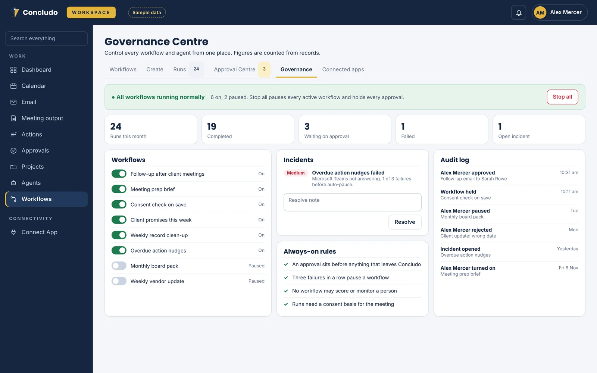
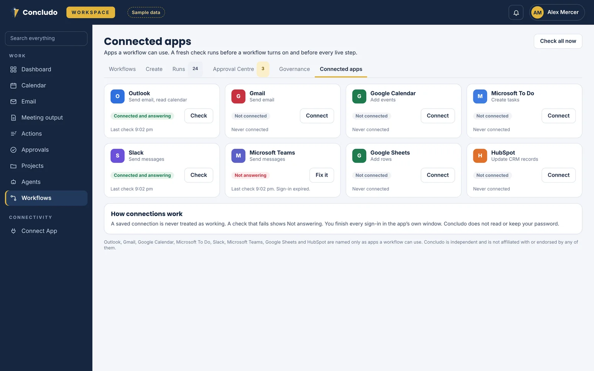
What runs today. Workflow storage is real and most execution is still simulated. The screens on this page are design previews with sample data for a fictional organisation. Outlook, Gmail, Google Calendar, Microsoft To Do, Slack, Microsoft Teams, Google Sheets and HubSpot appear in them only as apps a workflow can use. Concludo is independent and is not affiliated with or endorsed by any of them.
What the builder will not do, however you word it
A natural language builder is only safe if the things it cannot be talked into are enforced in the software rather than in its manners. These four are.
It cannot build away the approval step
Ask it to send without asking, and it will say no and build the version that asks. The contract the workflow engine runs under refuses anything marked as authorised to send.
It cannot connect what you have not approved
A workflow can only reach a connection you signed into yourself, through that provider's own page, with the permissions you granted there. It cannot widen its own access.
It cannot measure a person
No workflow can produce a score, a ranking or a productivity index for an individual. The database schema refuses the column, so it cannot be added by a clever brief.
It keeps the ones you declined
Every run records what it read, what it produced, how long it took and who approved or declined it. Declined work is kept too, because the refusals are the part worth being able to show.
What a workflow can reach
Mail, calendar, documents, files, spreadsheets, tasks, CRM, accounting and outbound webhooks, plus everything inside Concludo itself. You sign in through each provider's own page and approve exactly what Concludo may do there. Concludo never sees your password.
Concludo is an independent product. It is not affiliated with, endorsed by, or partnered with any device maker, meeting platform or note-taking service. Connections in the product screens on this page are shown by what they do rather than by brand, and the account in them is a demonstration account, not a customer. Connections are added progressively and each one shows its own status in the app.
Describe the routine you keep doing by hand
One sentence is enough to find out whether it was worth automating.
A manual you work in, not a book about meetings
Ten chapters, each with a worked example, a worksheet and a template you can use the same week. It covers the half that software cannot do for you: deciding whether the meeting should exist, costing it, specifying it, and running the follow-up.
The same method, sized to the job
Open any one to see the actual pages, what it is for, and who it is sized for. The free sample and the five tools are live now.
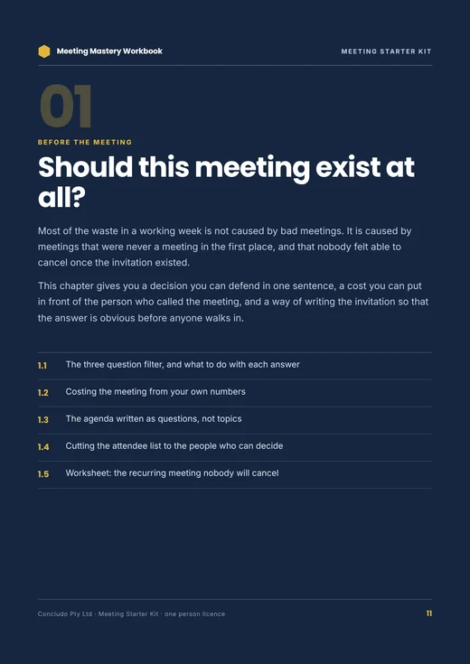
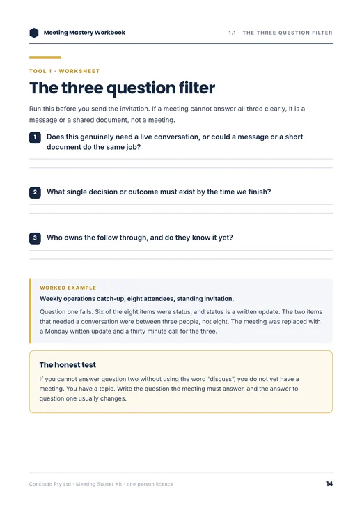
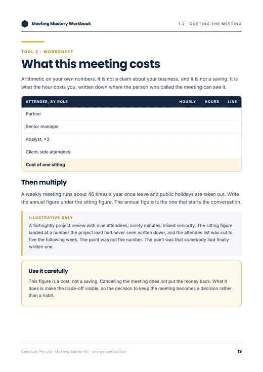
Test the approach on one meeting
The decision log, the action register, the follow-up email set and the agenda template. Enough to leave your next meeting with a clean decision list.
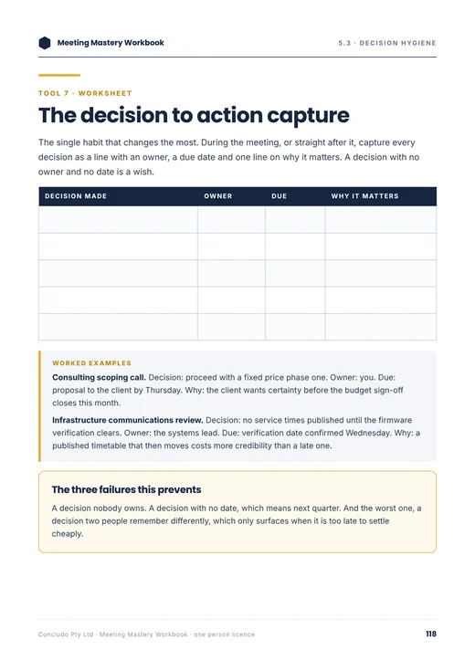
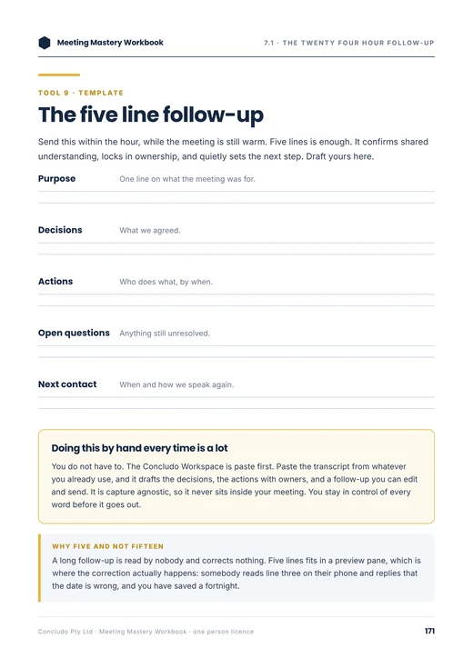
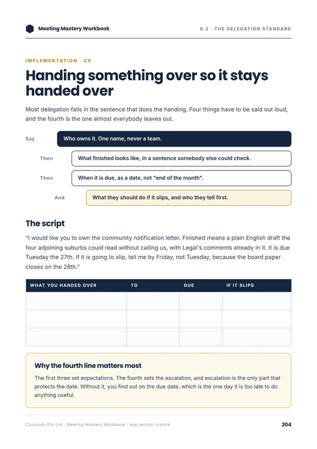
The complete system, end to end
About one hour of a consultant's time. Decision hygiene, the twenty four hour follow-up, the delegation standard and the C1 to C8 implementation section.
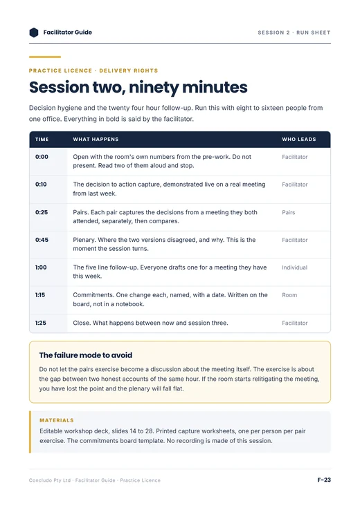
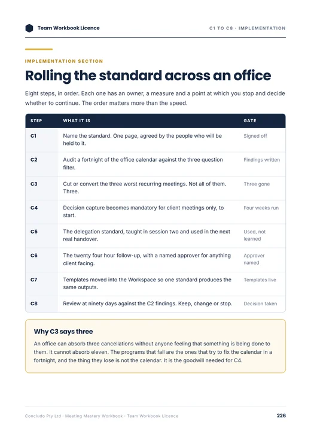
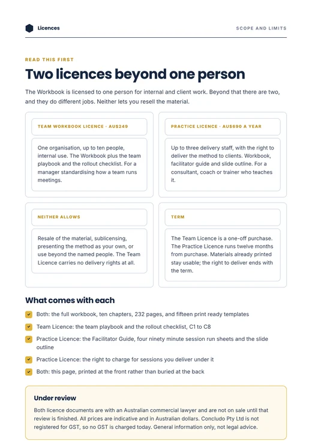
Run it across a team, or teach it
The team playbook and rollout checklist for a manager setting one standard. The Facilitator Guide, run sheets and delivery rights for somebody who teaches it.
All prices are indicative and in Australian dollars. Concludo Pty Ltd is not registered for GST, so no GST is charged today. The Team Workbook Licence and the Practice Licence carry licence terms that are with an Australian commercial lawyer and are not on sale until that review is finished.
Start with the free sample. The Meeting Cost Calculator, a sample chapter and two templates cost nothing and need no account. The five tools on this site are the ones most people photocopy out of the Workbook, given away.
Before, during and after
Should this meeting exist?
The decision tree, the cost formula, the agenda written as questions, and the attendee list cut to the people who can actually decide.
Capture that holds up later
The Ten Questions framework, the decision log specimen, and how to record a commitment so that it survives the week.
The twenty four hour follow-up
The delegation standard, the follow-up structure, consent and recording practice, and turning a transcript into finished work.
The free tools are a page out of it
Use all five, free, with no account. If they earn their place in your week, the Workbook is the rest of the method.
Test the approach on one meeting
Chapter one plus four print ready templates: the decision log, the action register, the follow-up email set and the agenda template. Priced below the line where anyone has to think about it, so you can find out whether the method is for you before you buy the method.
AU$19 one-off, licensed to one person. Indicative and in Australian dollars. Not on sale yet.
Three of them
Not a preview of a book you read. These are pages you write in, and the writing is the point.
Should this meeting exist at all?
The chapter opens with the argument stated plainly and the sections listed, so you can find the one page you need in a hurry rather than reading from the front.
The three question filter
Run it before you send the invitation. If a meeting cannot answer all three clearly, it is a message or a shared document. There is room to write, because answering it in your head does not count.
What this meeting costs
Arithmetic on your own numbers, written down where the person who called the meeting can see it. The page is explicit that this is a cost and not a saving, because the two get confused and the confusion is expensive.
One chapter, four templates
Should this meeting exist?
The three question filter, the cost worksheet, and what to do with each answer.
Decision log
Every decision with an owner, a date and one line on why it matters.
Action register
What was promised, by whom, by when, and whether it has moved.
Follow-up email set and agenda
The five line follow-up in three variants, and the agenda written as questions.
Who the Starter Kit is for. A consultant or coach testing whether the approach survives contact with their own week. If you already know you want the method, the Workbook at AU$59 is better value and roughly one billable hour.
Or start with the free tools, which cost nothing
The complete system, end to end
All ten chapters. Two hundred and thirty two pages, fifteen print ready templates, fillable worksheets, and the C1 to C8 implementation section that turns a good idea into the way an office works.
AU$59 one-off, licensed to one person for internal and client work. Indicative and in Australian dollars. Not on sale yet.
Three of the two hundred and thirty two
The three pages most people photocopy, which is why they are the three shown here.
The decision to action capture
The single habit that changes the most. Every decision gets an owner, a date and one line on why it matters, because a decision with no owner and no date is a wish.
The five line follow-up
Purpose, decisions, actions, open questions, next contact. Sent within the hour while the meeting is still warm. Short enough to fit in a preview pane, which is where the correction actually happens.
The delegation standard
Four things have to be said out loud when you hand something over, and the fourth, what they do if it slips, is the one almost everybody leaves out. It is also the only one that protects the date.
Nine more chapters and the implementation section
Decision hygiene
How agreements quietly dissolve the moment a call ends, and the capture habit that stops it. Includes the decision log specimens.
The twenty four hour follow-up
The structure, the timing, and why a long follow-up corrects nothing. The five line template and the three variants.
The delegation standard
Handing work over so it stays handed over, with the escalation line that protects the date.
Consent and capture
What to say before you record, what consent requires in an Australian workplace, and how to handle the transcript afterwards. General information only, not legal advice.
The meeting free alternatives
When a message, a document or an asynchronous update beats a live call, and how to make the swap without looking evasive.
Implementation, C1 to C8
Eight ordered steps for rolling the standard across an office, each with an owner, a measure and a gate at which you stop and decide whether to continue.
Who the Workbook is for. Somebody who intends to change how a team works, not only how their own week looks. The implementation section is the difference, and it is the part people come back to in month three.
The whole method, in one book you write in
Run it across a team, or teach it to clients
Two licences beyond the single person edition, doing two different jobs. One sets a standard inside an organisation. The other carries the right to deliver the method to somebody else's. Neither allows resale.
Both licence documents are with an Australian commercial lawyer and are not on sale until that review is finished. Prices indicative and in Australian dollars.
Which one you need
- The full Workbook for everyone covered
- The team playbook and the rollout checklist
- Cheaper per person than ten copies
- No delivery rights. Internal use only
- Everything in the Team Licence
- The Facilitator Guide and four session run sheets
- An editable slide outline in your own branding
- The right to charge for sessions you deliver under it
Neither licence permits resale of the material, sublicensing, or presenting the method as your own. The Team Licence carries no delivery rights at all. All prices are indicative and in Australian dollars. Concludo Pty Ltd is not registered for GST, so no GST is charged today.
What a facilitator actually holds
Somebody in your office runs the sessions. These are the pages they run them from.
Session two, minute by minute
A run sheet, not a lesson plan. It says what happens at each point, who leads it, and which moment the session turns on. It also names the failure mode, because every facilitator hits the same one. Practice Licence only.
Rolling the standard across an office
Eight steps in order, each with a gate at which you stop and decide whether to continue. The order matters more than the speed, and the page says why. In both licences.
What each licence actually covers
Printed at the front, not buried. What you may do, what you may not, who is covered and for how long, in four boxes so nobody has to interpret them.
What is not for sale. Concludo does not run facilitated workshops, team onboarding or meeting workflow audits today, and nothing on this page should be read as an offer to run one. The Practice Licence licences your own people to run the sessions themselves.
One standard, taught by your own people
Five tools. No account, no card.
All five run here in your browser. Nothing you type is sent anywhere, stored or seen by Concludo. Every figure is arithmetic on the numbers you put in, and none of it is a claim by Concludo about your business.
Meeting Cost Calculator
What one sitting costs, and what it costs across a year. Usually the start of a different conversation about the recurring meeting nobody wants to cancel.
AU$0 a year at the frequency you chose. Illustrative, calculated from your inputs only.
This is a cost, not a saving. Cancelling the meeting does not put the money back. What the number does is make the trade-off visible, so keeping the meeting becomes a decision rather than a habit.
The Ten Questions
Answer these before you send the invitation. If you cannot answer the first four, the meeting is not ready, and the honest move is to answer them in writing instead.
Meeting Audit Scorecard
Mark one recurring meeting out of twenty four. It scores the meeting, never the people in it. Run it across a fortnight of your own calendar and it tends to find the same three sessions in every organisation.
Responsible Capture Checklist
What to say before you record, and what to do with the transcript afterwards. Tick what is true and it writes you the sentence to say at the top of the call.
General information only, not legal advice. Recording law in Australia differs between states and between private and workplace conversations. If anything about a recording matters commercially, take advice before you press record.
Delegation Script Pack
Four things have to be said when you hand something over, and the fourth is the one almost everybody leaves out. Fill these in and it writes the handover for you.
The first three lines set expectations. The fourth sets the escalation, and escalation is the only part that protects the date. Without it you find out on the due date, which is the one day it is too late to do anything useful.
Nothing you type here leaves your browser. These tools run entirely on this page. There is no account, no sign-in, no tracking of what you enter and no copy kept by Concludo. Figures are calculated from your own inputs and are illustrative. Concludo holds no customer data and publishes no benchmarks.
The tools fix the meeting. The method fixes the follow-through.
Every tool on this page is a page out of the Meeting Mastery Workbook. The free sample chapter and two of the templates come with them.
Priced so one person can start
A subscription for the software, a one-off for the method, and licences when a whole practice needs to work the same way. Every price below is indicative and is being tested with real buyers before anything is published as final.
Nothing here can be bought yet. The Workspace is in build and is not open for sale. These prices are published so you can tell us whether they are wrong. The five free tools are live and need no account.
The software
The plans differ by who uses them, how much they use, how many people collaborate and how much control they need. No plan hides a core feature to force an upgrade.
- Individual with occasional meetings or a single client
- Twenty processed transcripts a month, three projects
- Meeting output document, summary, decision log, action plan, action tracker, search
- One connected account. Export and delete your data
- Consultant, coach or adviser with ongoing client work
- One hundred transcripts a month, unlimited projects
- Follow-up email, client deck and action timeline. Decision memory across clients, and the calendar
- Three connected accounts, audit of your own actions
- Firm or department of three to twenty people
- One hundred transcripts a seat a month, pooled
- Roles, shared projects, comments, assignments, approvals
- Admin console, seat management, audit log, retention rules
- No individual scoring, by design and by schema
- Organisation with procurement, security or scale needs
- Pooled allowance, departments and multiple workspaces
- Custom retention, review and approval policies
- Named contact, agreed response times, onboarding included
All prices are indicative and in Australian dollars. Concludo Pty Ltd is not registered for GST, so no GST is charged today. Enterprise would be quoted excluding GST. Annual billing is two months free, about seventeen per cent.
The Enterprise plan is a design, not a product. It does not exist in the software today. Single sign-on, usage limits and seat enforcement are not built, and Enterprise would only be sold once those, signed data processing terms, insurance and a security review all exist. It is published here so an organisation can tell us whether the shape is right.
Intended plan terms, when the Workspace opens. A 14 day free trial with no card, with full Pro subscription features. No permanent free plan. Annual billing gives two months free. The first 25 paying accounts would receive 25% off for their first 12 months, and no other discount stacks with it. These terms are published so you can challenge them. None is on offer today.
Workbooks and licences
Separate products with their own licences, sold on their own. A workbook is never bundled automatically into a Workspace plan.
| Product | What it covers | Licence | Price |
|---|---|---|---|
| Free sample and tools | Meeting Cost Calculator, sample chapter, two templates | Personal use | AU$0 |
| Meeting Starter Kit | Chapter one, decision log, action register, follow-up email set, agenda template | One person | AU$19 one-off |
| Meeting Mastery Workbook | All ten chapters, 232 pages, worksheets, templates, free tools | One person, internal and client work | AU$59 one-off |
| Team Workbook Licence | The Workbook plus the team playbook and rollout checklist | One organisation, up to ten people, internal use | AU$249 one-off |
| Practice Licence | Workbook, facilitator guide, slide outline and delivery rights | Up to three delivery staff, no resale | AU$690 a year |
All prices are indicative and in Australian dollars. Concludo Pty Ltd is not registered for GST, so no GST is charged today. The Team Workbook Licence and the Practice Licence carry licence terms that are under legal review and are not on sale until that review is finished.
The workbook credit. A buyer of the Starter Kit or the Workbook may apply what they paid against their first two months of a Starter or Pro subscription, once. It is an optional offer rather than a bundle, and it has to be asked for.
The honest list
Workspace subscriptions
The Workspace is built and partly working, and it is not yet billable. There is no checkout, no trial signup and no payment on this site. When that changes, this page will say so and the prices will have been tested with buyers first.
Four named features
Branded PowerPoint export, the client deck, the action timeline, follow-up email drafting, single sign-on, and usage limit enforcement. They appear in the plan designs above because that is where they will sit. They are not claimed anywhere on this site as working.
Workshops and audits
Facilitated workshops, team onboarding and meeting workflow audits are planned as fixed-scope services. None of them can be bought today, and nothing on this site should be read as an offer to run one.
Tell us which number is wrong
Prices stay indicative until buyers confirm them. If one of these is off, the useful thing you can do today is say so.
An Australian company building one thing properly
Concludo Pty Ltd is a registered Australian company based in Melbourne. It builds a method and a machine: a teachable way of running fewer, better meetings, and paste-first software that turns any transcript into finished work.
What is true today, and nothing more
Concludo is pre-revenue and in build. The Workspace runs and does real work, and it is not yet billable or open to customers. The five free tools are live and open to anyone. There are no customers, pilots, case studies or revenue, and you will not find any claimed on this site. When there are, they will appear with the permission of the people they belong to.
Prices are published as indicative and stay open to revision until real buyers confirm them. Facilitated workshops, team onboarding and meeting workflow audits are planned and are not for sale. Everything the Workspace produces today is rule-based: no language model is called anywhere in the product yet.
That is a slower way to launch a product. It is also the only version of this page that would still be true in a year.
Concludo Pty Ltd
ACN 701 605 898. Melbourne, Australia. Australian English, Australian time zones.
What it will not do
Score or rank an individual. Send anything without approval. Claim a result it cannot show you the record for.
Independent by design
Not affiliated with, endorsed by, or partnered with any device maker, meeting platform or note-taking service. Capture on whatever you already use.
A person answers this inbox
Questions, a demand for evidence, or something that looks wrong on this site. All of it reaches the same place.
Concludo Pty Ltd, Melbourne, Australia.